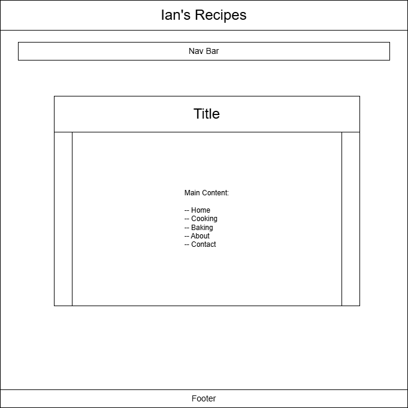
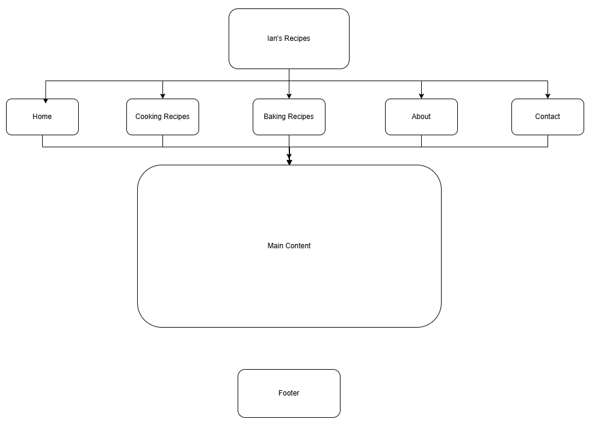

Project Overview – Ian's Recipes
Project Overview
Ian’ Recipes is a simple, fun, and casual recipe website created for my client, Ian Skinner. Ian enjoys cooking and wants a place to showcase his personal and favorite recipes in an organized, easy-to-browse format. The website will present his recipes in two main categories—Cooking and Baking— with clear subsections and photos of the final dishes.
The intended users of this website include beginners, casual home cooks, friends, classmates, and anyone looking for approachable recipes. The tone of the site will be clean, friendly, and inviting, making it easy for users to explore Ian’s recipes and learn more about his cooking style.
The content of the website will include recipe descriptions, ingredient lists, cooking instructions, photos of the final dishes, and a short biography of Ian Skinner. Users will also be able to submit their own recipe suggestions through a simple form.
Client Information
- Client Name: Ian Skinner
- Organization/Association: University of North Carolina at Charlotte (STUDENT)
- Email: iskinner@charlotte.edu
- Phone: [private]
Wireframe

Site Map

- Home – Landing page with slideshow and featured recipes
- Cooking Recipes – Recipes divided into meat, poultry, soups/stews, and misc.
- Baking Recipes – Recipes divided into oven-required, cold recipes, and misc.
- About the Chef – Information about Ian Skinner and his cooking interests
- Contact / Submit a Recipe – Form for users to submit recipe ideas
A link to the sitemap image and the embedded figure will be added here once created in Draw.io.
Page Designs
1. Home
- Purpose: Introduce the site and highlight featured recipes.
- Audience: All users.
- Content: Slideshow of recipe photos, welcome text, navigation.
- Interactivity: JavaScript slideshow.
2. Cooking Recipes
- Purpose: Display Ian’s cooking recipes.
- Audience: Users looking for meal ideas.
- Content: Tabs for meat, poultry, soups/stews, misc.
- Interactivity: jQuery UI tabs, simple JavaScript filter.
3. Baking Recipes
- Purpose: Display Ian’s baking recipes.
- Audience: Users interested in desserts or baked goods.
- Content: Tabs for oven-required, cold recipes, misc.
- Interactivity: jQuery UI tabs.
4. About the Chef
- Purpose: Provide background information about Ian Skinner.
- Audience: Users who want to learn more about the creator.
- Content: Bio, photo, cooking interests.
5. Contact / Submit a Recipe
- Purpose: Allow users to send recipe suggestions.
- Audience: All users.
- Content: Form fields for name, email, recipe idea.
- Interactivity: Form validation using JavaScript.
Dynamic Functionality
The website will include several interactive features to improve user experience:
- JavaScript Slideshow: Displays rotating images of final recipe dishes on the home page.
- jQuery UI Tabs: Used on the Cooking and Baking pages to organize recipe categories.
- Photo Gallery: A simple gallery showcasing recipe images.
- Recipe Submission Form: Allows users to submit ideas (read-only, no database).
- JavaScript Filter: Lets users filter recipes by category or keyword.